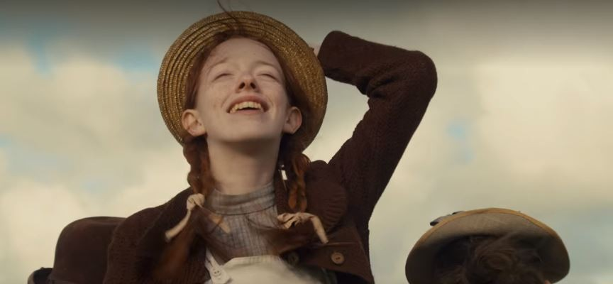
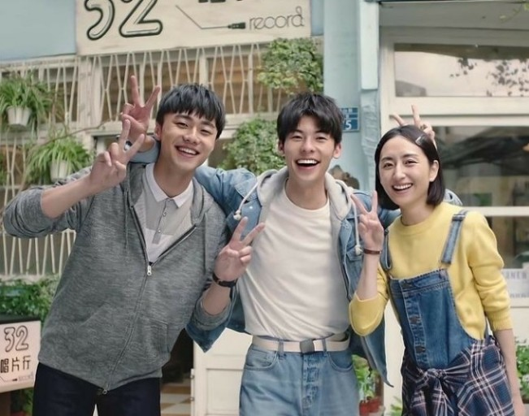
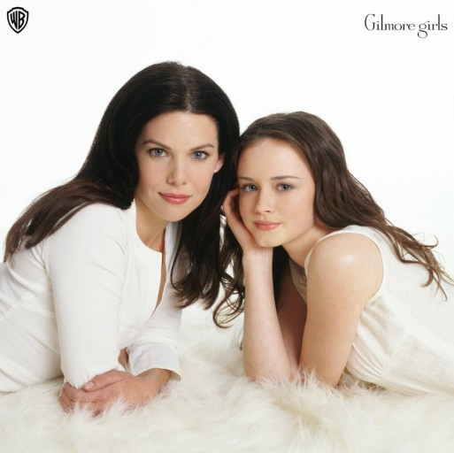
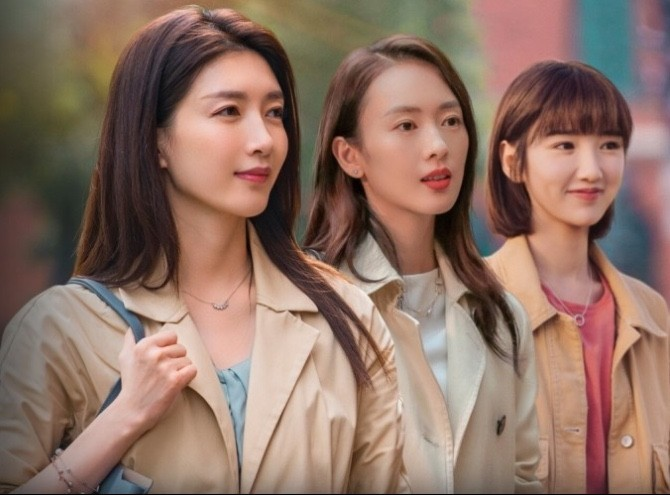
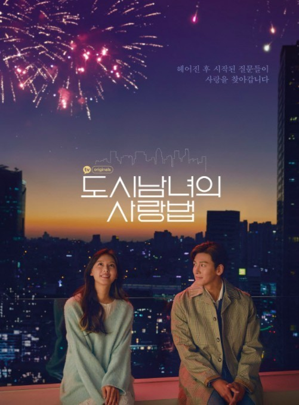

김희선의 넷플릭스 추천작 top5
<1.빨간 머리 앤>
초록지붕집에 입양된 빼빼마른 빨간머리 여자아이의 일상을 담은 힐링 드라마.
남자아이를 원하던 마릴라와 매슈의 집에 잘못 입양을 간 터라 입양 초기에는
상처도 많이 받고 홀대를 받았지만 점점 사랑스러운 앤에게 마음을 열면서 전개되는 스토리.
일상에 지치고 쉬고 싶을 때 잔잔하게 볼 수 있는 드라마이다. 성장스토리에 감동 5방울 추가한 느낌
<2.상견니>
어느날 갑자기 남자친구를 떠나보낸 황위쉬안. 그런 남자친구와 똑같이 생긴 누군가가 이 세상에 존재한다?
그사람의 정체를 확인하기 위해 노력하던 중 특별한 사실을 발견하게 되면서 이야기가 시작된다.
특유의 대만 작품들이 공통적으로 갖는 포스터의 첫 이미지와 다르게 흘러가는 전개가 신선하고 흥미로웠던 드라마!
흥미진진한 스토리를 좋아하는 사람들에게 추천한다
<3.길 모어 걸스>
이른 나이에 아이를 가진 로렐라이와 그녀의 딸 로리가 함께 성장하는 성장스토리.
그녀들의 잔잔한 일상중 등장하는 마을 사람들과의 케미가 볼만 하다.
무겁지 않고 잔잔히 흘러가는 에피소드들로 이루어진 드라마이기 때문에 중간중간 등장하는
희화화된 한국인의 모습이 등장한다. 오래된 드라마이기 때문에
인종차별적인 요소가 조금 포함되어 있기도 하지만 그 부분을 제외한 다면 가볍게 볼 수 있다.
혼자 밥 먹을 때 심심한 사람들에게 강력 추천한다.
< 4.겨우,서른>
중국판 멜로가체질 같다는 평을 듣고 접한 드라마였는데 그 말에 공감한다.
서른살 여성들의 각자 댜른 삶이 자세히 묘사되어 있어서 한명 한명에게 집중하면서 보았던 드라마이다.
여성의 희생적인 모습이 많이 담기고 마냥 어리숙해 보이는 모습들도 담겨있어서
초반에는 조금 안타깝기도 했지만 한 화 한화 잘 짜여진 드라마이다.
<5.도시남녀의 사랑법>
여행지에서 잠시 한여름 밤의 꿈처럼 사랑을 하다가 현실로 돌아온 남녀의 이야기가 담겨있다.
여행지에 결혼을 약속했지만 아직 스스로가 미성숙하고 미완전하다고 생각하는 자존감 낮은 여자는 남자에게서 도망친다.
그 이후 그 둘이 다시 재회하기 까지의 스토리가 자세히 담겨있다. 일반적인 드라마의 전개, 촬영 방식과는 다르게 인터뷰형식으로
진행되어서 신선하게 다가왔다. 러닝타임도 40분 내외로 짧은 편이라 가볍게 즐길 수 있다